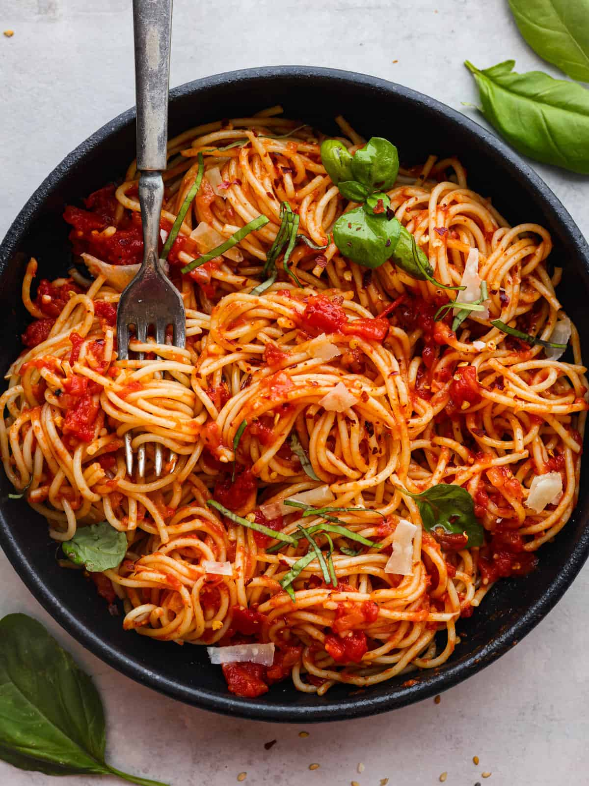

Vegan Friendly Pomodoro Sauce

Description
This recipe is for a simple Pomodoro sauce! There's lots of room for customization and additions, one of my favorites is adding toasted pine nuts... mmmm!
I first found this recipe in Katheryn Nicolai's book "Nothing Much Happens" and adjusted it to my personal tastes. This recipe follows my personal adjustments, I hope you enjoy-
Buon appetito!~
Serves: 3
Prep time: 5 min
Cook time: 20 min
Ingredients
- 1 800g can of whole San Marzano tomatoes (technically any brand of whole peeled tomatoes work, but I recommend San Marzano)
- 5 tbsp of quality extra virgin olive oil
- 1/3 yellow onion, thinly sliced
- 1/4 tsp salt, to taste
- Fresh basil (optional)
- Pine nuts** (optional)
- Al dente spaghetti for serving
Steps
- Empty your can of tomatoes into a large bowl and crush the whole tomatoes with your hands (make sure to wash your hands first!)
- Heat your pan over medium heat, once heated, add your olive oil and sliced onion
- Cook the onion slices until they are translucent and have some color
- Add your now crushed tomatoes into the pan along with 1/4 tsp of salt (optional: tear and add in your basil leaves in this step)
- Lower your heat to low and cook for 20-25 minutes (optional: cover your pan for a thinner sauce)
- Serve over pasta and add vegan-friendly toppings of your choice!
**For pine nuts
- Take 2 tbsp of pine nuts and add to a pan over medium heat
- Toast the nuts and shake the pan intermittently for approx. 8-10 min
- Serve fresh over your dish!